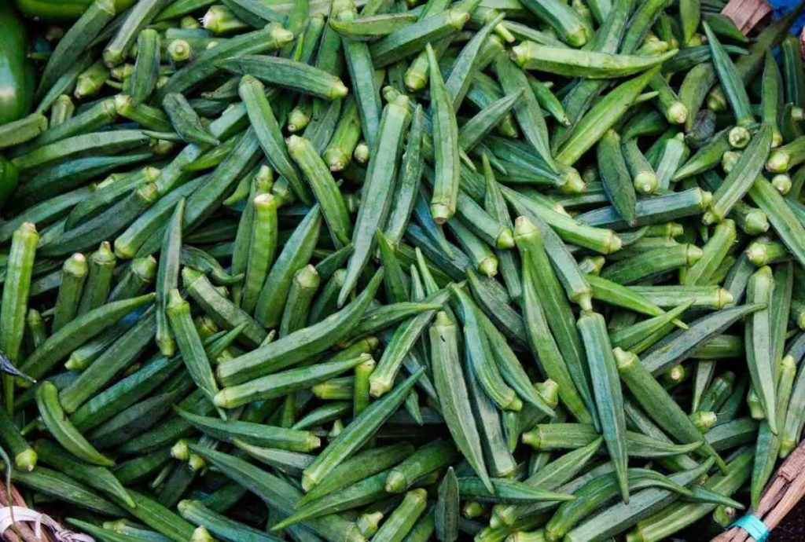

1. Seasons for Growing Ladyfinger

Ladyfinger (Okra) thrives in warm climates. The ideal growing seasons for Ladyfinger are:
- Spring: Plant after the last frost date when the soil is warm.
- Summer: Continue growing during the hot months for optimal yield.